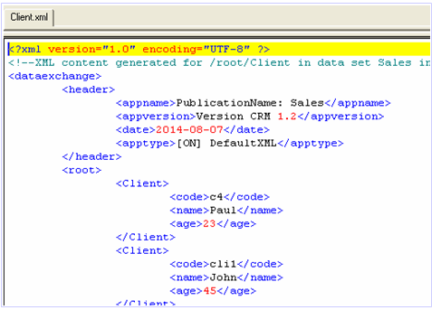
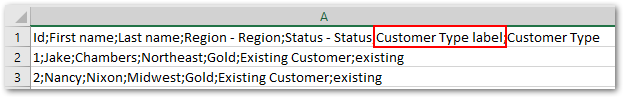

Exporting data
Export overview
Depending on what format you are exporting to, the add-on presents you with slightly different options. In most cases you will see a configuration page, and mapping pages. The sections below cover options relevant to each export format type:
Attention
When exporting XML or Excel, you can export multi-valued complex fields. All levels of a complex field can be exported to XML. However, only the first level can be exported to an Excel file.
Exporting to CSV
You can run the Export CSV service from a table's Actions menu. The add-on only exports a single table's contents at a time. You only need to edit configuration settings and create column mappings. The settings in the configuration page determine the exported file's structure. For example, you can specify which separators and date formats to use. Also, you can load preferences that automatically setup the configuration and mapping. Additionally, you can select a Java class to transform data on export.
Separator behavior
Exported CSV files use new lines (line feed and carriage return) to separate records. When configuring CSV export you can use the following options to define how the exported file separates fields and encapsulates values:
The Separator option defines the character used to separate fields, or columns. The following example shows how the default option of a semicolon separates fields:
pk1;Salary 1;50,000
The Delimiter option allows you to specify a character to encapsulate field values. As shown below, the exported file adds this character—a pipe character in this case—to the beginning and end of the field value:
|pk1|;|Salary| |1|;|50,000|
A conflict would occur when an exported field includes the same character used as a separator. However, the add-on automatically uses double quotes as escape characters to ensure data integrity. The following sample shows a scenario where a comma is specified as the separator character and appears in the Salary field's value:
pk1,Salary 1,"50,000"
You can use the Delimiter option to override default behavior. As shown below, the delimiter marks the start and end of each field eliminating the necessity of escape characters:
|pk1|,|Salary| |1|,|50,000|
Note
The add-on imports correctly from exported files where data values include the defined separator. These files also display correctly in spreadsheet programs. However, if you define a delimiter and view the file in a spreadsheet program, the display might not reflect the actual data structure.
Exporting to Excel
You can run the Export Excel service from a dataset, or table Actions menu. Running the service from a dataset allows you to export data from multiple tables to multiple sheets in the Excel file. When you run the service from a table, you can select records to export, or export all table contents. The following sections provide more information on the options available depending on how you execute the export operation:
Note
If invalid foreign keys exist, they will be included in the export and highlighted in the Excel file.
Attention
To avoid issues during export of a large Excel file, please use only the default options and do not activate the Include validation messages, Export related data, or Export permalink for the primary or foreign key options.
Exporting from a table
When you export from a table, you can select the records to include in the export, or export all table content. Just select the records before running the service if you only want to export a few. The configuration page allows you to determine the exported file's structure, load preferences, and select a Java class for data transformation. As shown in the following image, you can also create a table template to customize look and feel of the exported file. Once configuration is complete, use the mapping page to determine how and which source table columns map to the target file columns and choose whether to save a preference.
Exporting from a dataset
In addition to the options available when exporting from a table, you can choose one or more tables from the dataset to export. The add-on exports each table into a separate sheet in the Excel file.
After selecting the tables to export the add-on presents you with two pages that allow you to map which sheet the tables are exported to and the source table columns with the target sheet columns. As shown below the column mapping page uses tabs to indicate which table/sheet you are mapping.
Including messages in exported files
You can include validation messages in exported Excel files. The add-on highlights fields and rows containing messages using: red for error, orange for warning, and blue for information. If a message applies to a table, the add-on creates a new sheet in the exported file and appends "-MSG" to the name.
As shown below, select the level(s) of messages to include in the export. Note that exporting messages forces validation for all tables included in the export.
The following image shows an example of how messages are included in an exported Excel file:
SQL export
The following steps demonstrate how to use the Export SQL service:
From a table's Actions menu, select the Export SQL service, the Configuration screen displays.
From a table's Actions menu, select the Export SQL service, the configuration screen displays as shown below:
Choose an external database table from the SQL table or view drop-down list and select the Java class used to map columns. Once you've finished the configuration, click Mapping to display the column mapping screen.
The image below shows the result of exporting to the Customers table on the external database.
XML export
If the table is not defined in the data mapping configuration when you attempt to export to XML, Default XML format displays as the only available target application. This default format, provided by the add-on, allows you to easily get an XML file and doesn't require a specific data mapping configuration.
If a field name has to be renamed when exporting to an XML file, or another instance arises where data in the source and target differ, you have to specify a data mapping configuration. In these types of cases, other target applications display as options (see the rest of this user guide).
When the Use header option is used, the exported XML file contains a standard header with the following data:
The name of the application. By default, this is the name of the dataset in which the table is located (a timestamps value is also added to build the name).
The version that has been selected during the export configuration. If no specific version was specified, this will be blank.
The export date.
The type of the XML export, either Default XML or XML when a user-defined data mapping configuration is used.

Exporting related data
To help you locate data linked to specific records, the add-on allows you to export related data when exporting to:
CSV: The add-on exports a ZIP file containing individual CSV files. One file contains the export's source data. The remaining files—one for each table—contain the related data.
Excel: The add-on exports a single Excel file. The first sheet in the file contains the export's source data. Each additional sheet—one for each table—contains the related data.
The option to export related data is only available when exporting an individual record, or from a table. To include related data in a CSV or Excel export, use the following checkboxes for the Export related data property on the export's configuration screen:
From referenced tables: to include data referenced by the selected record(s). Note that this may include data from external tables.
From tables that reference the selected record: to include data from tables that hold a relationship to the selected record.
The following images highlights the options when exporting Excel:
Note
The export only includes data on which you have sufficient permissions.
Enumeration export options
The add-on allows you to include enumerations in CSV and Excel exports of tables, or individual records. As highlighted below, the options are available from the main configuration page (the image shows Excel export, CSV only includes the Export label option):
The following describes behavior for each supported export type:
Excel export: On the main configuration page, the add-on presents you with the following options under Export enumerations:
Export label: The export includes an additional column for the enumeration field's label.

Export static enumerations: The the enumeration column will contain a drop-down list of enumeration values defined in the data model.

When you select both options, the exported columns both have drop-down lists of their available values.
If you leave both options unchecked, the exported column includes only the enumeration value defined in the data model.
CSV export: The exported file will include a dedicated column with the enumeration value's labels.
